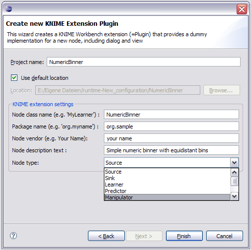
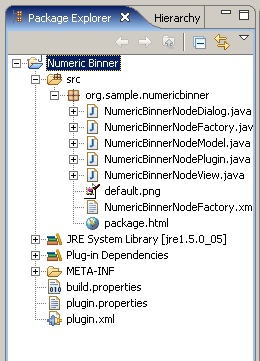

If you want to extend the functionality of KNIME you can implement your own Nodes and contribute them to the KNIME Node Repository. A node consists of four basic classes:
In addition an XML file is mandatory (with exactly the same name as the factory). It specifies the name and type of the node, and describes the node, the configuration options, the in- and output, and the view(s) of the node.
So that the user does not have to create all files by hand, the KNIME platform provides a new-node-extension-wizard, which collects necessary information from the user and automatically creates a KNIME plugin.
In the KNIME perspective, select File->New->Other-> KNIME->Create a new KNIME Node-Extension. Continue by clicking the Next button. In the next screen enter the details about your node. Let's assume you want to write a numeric binner that assigns the data into equidistant bins according to the value of a specific attribute value. We will call that node NumericBinnerNode. Your new-node-extension-wizard would look similar to the one shown in Illustration 1:

Enter a project name with which you will find it in the KNIME
workflow navigator. The node class name is the name of your node. The
necessary classes described above all start with this name (e.g.
NumericBinnerNodeModel, NumericBinnerNodeDialog, etc.). In the Package
name
field specify the package name of the node. In the Node
vendor
field enter your name. Your name appears as the author name in
the java doc. In the Node description text
field provide a short
description of your node. Finally specify the node type: this assigns a
specific background color to the node in the KNIME workflow.
After clicking the Finish button the new-node-extension-wizard creates the project and all necessary directories and files required for a proper KNIME plugin as depicted in Illustration 2:

If the project contains errors concerning the Java build path try the following: Select from the menu Projekt->Clean... Select "Clean projects selected below" and select the newly created project or "Clean all projects". This fixes the errors in most of the cases.
The created classes contain only exemplary method stubs that can be completely deleted. You must add the desired functionality. The following sections explain how to do this step-by-step.